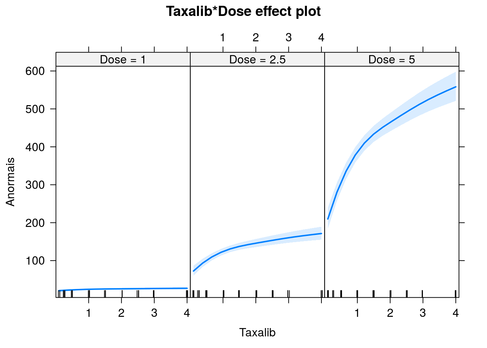

## cells ca doseamt doserate
## 1 478 25 1 0.10
## 2 1907 102 1 0.25
## 3 2258 149 1 0.50
## 4 2329 160 1 1.00
## 5 1238 75 1 1.50
## 6 1491 100 1 2.00## cells ca doseamt doserate
## Min. : 90.0 Min. : 25.0 Min. :1.000 Min. :0.10
## 1st Qu.: 183.5 1st Qu.:100.0 1st Qu.:1.000 1st Qu.:0.50
## Median : 298.0 Median :106.0 Median :2.500 Median :1.50
## Mean : 640.7 Mean :120.4 Mean :2.833 Mean :1.65
## 3rd Qu.:1001.0 3rd Qu.:122.5 3rd Qu.:5.000 3rd Qu.:2.50
## Max. :2329.0 Max. :419.0 Max. :5.000 Max. :4.00## Taxalib
## Dose 0.1 0.25 0.5 1 1.5 2 2.5 3 4
## 1 0.05 0.05 0.07 0.07 0.06 0.07 0.07 0.07 0.07
## 2.5 0.16 0.28 0.29 0.32 0.38 0.41 0.41 0.37 0.44
## 5 0.48 0.82 0.90 0.88 1.23 1.32 1.34 1.24 1.43Taxa de cromossomos anormais segundo dose aplicada e taxa de liberação da dose.
Representação gráfica da tabela cruzada.
Vamos tratar a dose administrada como um fator (compararemos as diferenças nas taxas de anormalidade sob as três doses consideradas) e a taxa de liberação como numérico.
Vamos ajustar modelos de regressão Poisson considerando a (log) contagem de células como termo offset.
Inicialmente, vamos considerar modelos com efeitos aditivos de dose e taxa de liberação (sem interação). Vamos avaliar a melhor forma de inserir a taxa de liberação.
ajuste1 <- glm(Anormais ~ Dose + Taxalib + offset(log(Células)),
family = poisson, data = dicentric)
summary(ajuste1)##
## Call:
## glm(formula = Anormais ~ Dose + Taxalib + offset(log(Células)),
## family = poisson, data = dicentric)
##
## Deviance Residuals:
## Min 1Q Median 3Q Max
## -5.9156 -0.7323 0.1480 1.2257 2.4875
##
## Coefficients:
## Estimate Std. Error z value Pr(>|z|)
## (Intercept) -2.99595 0.04173 -71.79 <2e-16 ***
## Dose2.5 1.63774 0.04858 33.71 <2e-16 ***
## Dose5 2.77710 0.04259 65.21 <2e-16 ***
## Taxalib 0.15459 0.01367 11.30 <2e-16 ***
## ---
## Signif. codes: 0 '***' 0.001 '**' 0.01 '*' 0.05 '.' 0.1 ' ' 1
##
## (Dispersion parameter for poisson family taken to be 1)
##
## Null deviance: 4753.004 on 26 degrees of freedom
## Residual deviance: 94.794 on 23 degrees of freedom
## AIC: 278.2
##
## Number of Fisher Scoring iterations: 4ajuste2 <- glm(Anormais ~ Dose + Taxalib + I(Taxalib^2) + offset(log(Células)),
family = poisson, data = dicentric)
summary(ajuste2)##
## Call:
## glm(formula = Anormais ~ Dose + Taxalib + I(Taxalib^2) + offset(log(Células)),
## family = poisson, data = dicentric)
##
## Deviance Residuals:
## Min 1Q Median 3Q Max
## -4.4288 -1.1013 0.7453 0.8810 2.8219
##
## Coefficients:
## Estimate Std. Error z value Pr(>|z|)
## (Intercept) -3.14937 0.05122 -61.483 < 2e-16 ***
## Dose2.5 1.63955 0.04859 33.742 < 2e-16 ***
## Dose5 2.77914 0.04263 65.199 < 2e-16 ***
## Taxalib 0.41411 0.05025 8.242 < 2e-16 ***
## I(Taxalib^2) -0.06565 0.01226 -5.357 8.46e-08 ***
## ---
## Signif. codes: 0 '***' 0.001 '**' 0.01 '*' 0.05 '.' 0.1 ' ' 1
##
## (Dispersion parameter for poisson family taken to be 1)
##
## Null deviance: 4753.004 on 26 degrees of freedom
## Residual deviance: 65.516 on 22 degrees of freedom
## AIC: 250.92
##
## Number of Fisher Scoring iterations: 4ajuste3 <- glm(Anormais ~ Dose + log(Taxalib) + offset(log(Células)),
family = poisson, data = dicentric)
summary(ajuste3)##
## Call:
## glm(formula = Anormais ~ Dose + log(Taxalib) + offset(log(Células)),
## family = poisson, data = dicentric)
##
## Deviance Residuals:
## Min 1Q Median 3Q Max
## -2.9312 -1.1537 0.2774 0.9127 2.3620
##
## Coefficients:
## Estimate Std. Error z value Pr(>|z|)
## (Intercept) -2.76958 0.03430 -80.74 <2e-16 ***
## Dose2.5 1.65299 0.04857 34.03 <2e-16 ***
## Dose5 2.80095 0.04251 65.89 <2e-16 ***
## log(Taxalib) 0.21447 0.01672 12.83 <2e-16 ***
## ---
## Signif. codes: 0 '***' 0.001 '**' 0.01 '*' 0.05 '.' 0.1 ' ' 1
##
## (Dispersion parameter for poisson family taken to be 1)
##
## Null deviance: 4753.004 on 26 degrees of freedom
## Residual deviance: 42.776 on 23 degrees of freedom
## AIC: 226.18
##
## Number of Fisher Scoring iterations: 4A terceira opção produziu melhor ajuste (repare os valores das deviances e AICs)
Avaliar se há efeito de interação
ajuste4 <- glm(Anormais ~ log(Taxalib) * Dose + offset(log(Células)),
family = poisson, data = dicentric)
summary(ajuste4)##
## Call:
## glm(formula = Anormais ~ log(Taxalib) * Dose + offset(log(Células)),
## family = poisson, data = dicentric)
##
## Deviance Residuals:
## Min 1Q Median 3Q Max
## -1.49101 -0.62473 -0.05078 0.76786 1.59115
##
## Coefficients:
## Estimate Std. Error z value Pr(>|z|)
## (Intercept) -2.74671 0.03426 -80.165 < 2e-16 ***
## log(Taxalib) 0.07178 0.03518 2.041 0.041299 *
## Dose2.5 1.62542 0.04946 32.863 < 2e-16 ***
## Dose5 2.76109 0.04349 63.491 < 2e-16 ***
## log(Taxalib):Dose2.5 0.16122 0.04830 3.338 0.000844 ***
## log(Taxalib):Dose5 0.19350 0.04243 4.561 5.1e-06 ***
## ---
## Signif. codes: 0 '***' 0.001 '**' 0.01 '*' 0.05 '.' 0.1 ' ' 1
##
## (Dispersion parameter for poisson family taken to be 1)
##
## Null deviance: 4753.00 on 26 degrees of freedom
## Residual deviance: 21.75 on 21 degrees of freedom
## AIC: 209.16
##
## Number of Fisher Scoring iterations: 4## Analysis of Deviance Table
##
## Model 1: Anormais ~ Dose + log(Taxalib) + offset(log(Células))
## Model 2: Anormais ~ log(Taxalib) * Dose + offset(log(Células))
## Resid. Df Resid. Dev Df Deviance Pr(>Chi)
## 1 23 42.776
## 2 21 21.750 2 21.026 2.718e-05 ***
## ---
## Signif. codes: 0 '***' 0.001 '**' 0.01 '*' 0.05 '.' 0.1 ' ' 1dicentric$logx2 <- log(dicentric$Taxalib)^2
ajuste5 <- glm(Anormais ~ logx2 + log(Taxalib) * Dose + offset(log(Células)),
family = poisson, data = dicentric)
summary(ajuste5)##
## Call:
## glm(formula = Anormais ~ logx2 + log(Taxalib) * Dose + offset(log(Células)),
## family = poisson, data = dicentric)
##
## Deviance Residuals:
## Min 1Q Median 3Q Max
## -2.0877 -0.5878 0.1991 0.5481 1.4063
##
## Coefficients:
## Estimate Std. Error z value Pr(>|z|)
## (Intercept) -2.70940 0.03771 -71.851 < 2e-16 ***
## logx2 -0.03874 0.01667 -2.324 0.02010 *
## log(Taxalib) 0.05847 0.03629 1.611 0.10715
## Dose2.5 1.63855 0.04980 32.901 < 2e-16 ***
## Dose5 2.78149 0.04437 62.683 < 2e-16 ***
## log(Taxalib):Dose2.5 0.15011 0.04958 3.028 0.00246 **
## log(Taxalib):Dose5 0.18158 0.04356 4.168 3.07e-05 ***
## ---
## Signif. codes: 0 '***' 0.001 '**' 0.01 '*' 0.05 '.' 0.1 ' ' 1
##
## (Dispersion parameter for poisson family taken to be 1)
##
## Null deviance: 4753.004 on 26 degrees of freedom
## Residual deviance: 16.289 on 20 degrees of freedom
## AIC: 205.7
##
## Number of Fisher Scoring iterations: 3O efeito de interação é altamente significativo Vamos mantê-lo no modelo.

Vamos estimar se a variação na taxa de cromossomos anormais é diferente sob as doses 2.5 e 5.
##
## Simultaneous Tests for General Linear Hypotheses
##
## Fit: glm(formula = Anormais ~ log(Taxalib) * Dose + offset(log(Células)),
## family = poisson, data = dicentric)
##
## Linear Hypotheses:
## Estimate Std. Error z value
## log(Taxalib):Dose5 - log(Taxalib):Dose2.5 == 0 0.03228 0.04072 0.793
## Pr(>|z|)
## log(Taxalib):Dose5 - log(Taxalib):Dose2.5 == 0 0.428
## (Adjusted p values reported -- single-step method)A diferença é não significativa.
Exercício - Realizar o diagnóstico do ajuste com base na análise de resíduos, gráfico qqplot com envelope simulado,…
Uma forma de checar a adequação da distribuição Poisson é incorporar o offset ao preditor como covariável, associando a ele um parâmetro a ser estimado, e comparar os ajustes (testando beta(células)=1). Pergunta: Por que?
Modelo com interação entre dose e taxa de liberação, o (log) número de células não entra como offset, mas sim com um parâmetro adicional a ser estimado.
## Analysis of Deviance Table
##
## Model 1: Anormais ~ log(Taxalib) * Dose + offset(log(Células))
## Model 2: Anormais ~ Dose * log(Taxalib) + log(Células)
## Resid. Df Resid. Dev Df Deviance Pr(>Chi)
## 1 21 21.750
## 2 20 21.748 1 0.0024092 0.9609O resultado não significativo para o teste indica que não há evidências contra a hipótese nula (beta(log(células))=1), ou seja, é pertinente incorporar o (log) número de células como termo offset. Ponto para a distribuição Poisson!